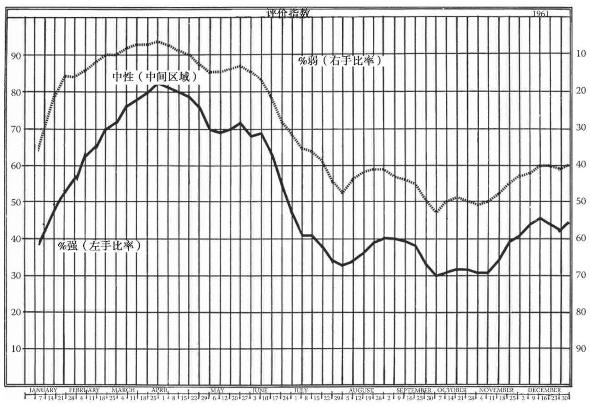
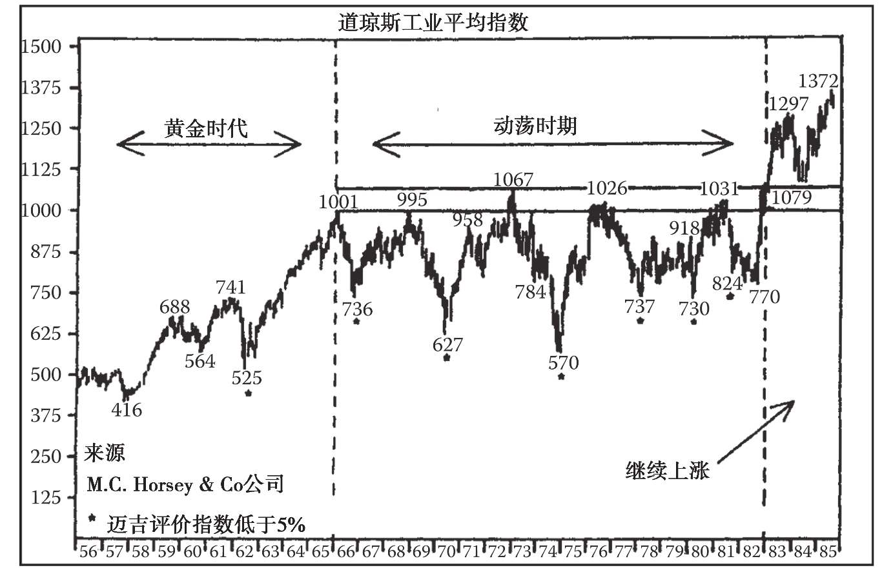

第38章 平衡的多样化配置
当普通投资者问：“你觉得市场现在怎么样”时，他往往希望得到一个简洁明了、非黑即白的答案。对他来说，市场不是牛市就是熊市。如果你回问：“你感兴趣的是哪一只股票呢？”那么他往往会说：“哦，我想知道的是市场的整体情况。”
如果翻看一下经常刊登金融广告的报纸和杂志，你会发现，很多广告和顾问服务都十分强调对于后市的预测能力，而这些预测往往是针对整个市场的走势而言的。
通常人们认为整个市场的走势是一致的，这并不能说完全错误，却是个非常危险的假设。确实，我们可以给出一些牛市或熊市的“定义”，比如说道氏理论。如果市场环境符合这些“定义”，我们就可以说“根据我们之前的规则，现在市场处于牛市（或熊市）。而且，如果我们一直将道琼斯工业指数（DIA）看作一只个股，并严格根据经典的道氏理论来操盘，那么会获利颇丰。（编者按：第4章的测算结果表明，根据道氏理论操盘，我们的净利润将达到492597.38美元，而买入并持有的净利润为25952.72万美元（截至2010年12月31日）。当然，现在道琼斯工业指数的确是一个交易品种（ETF）了。）
此外，大通胀和大紧缩都会改变股票的相对美元价值，在此类环境中，大多数个股的确也都是随势而动的。
但我们必须时刻谨记，平均指数本身是个抽象集合，并不代表铁路业、制造业、航空业本身。如果平均指数发生了变化，那是因为组成平均指数的个股变化了。虽然当平均指数上涨时，大多数个股都在涨，但我们并不能强行赋予其因果关系，说因为平均指数上涨了，所有个股都一定会上涨。如果我们这样想，那么将会得到一个结论：在牛市中，如果某只个股处于跌势，那么我们该及时买入该股票，因为该股最终会跟随其他个股的涨势。
回顾一下股票的长期历史表现，会找到大多数股票都在涨，或者大多数股票都在跌的时间段。暂时滞后的个股可能大涨以跟上大市，但这种情况并非一定会出现。而且，假定市场将会转牛，如果仅仅因为某些个股落后于大市表现便买入，或因为所有个股都将上涨便买入，很可能会陷入危险的境地。我们可能会在接下来几个月的时间里，眼睁睁地看着其他个股不断创新高，而自己的股票却毫无生机，甚至持续下跌。
基于现在为止你对市场的了解，你一定会同意，在平均指数处于熊市或大多数个股处于熊市时，将全部资金用于做多是不明智的。同理，在大市飞涨时，将全部资金用于做空也并非良策。
如果你坚持要100%做多或做空，那么建议你还是跟随大市的趋势。这样一来，你可以抓住大多数个股或平均指数提供的机会。
但你要知道，跟随趋势并不像听上去那么简单。我们可以对长线趋势做出“定义”，但问题是，你是否有足够的耐心和勇气，在长达几个月的不确定性甚至是反向走势中，持仓不动呢。在趋势反转期间，投资者常常难以做出买入还是卖出的决定。
此外，投资者还要知道究竟要买什么，或是卖什么，以及何时进行买卖。
平均指数所体现的简单形态和信号并不能代表市场全貌。将市场作为一个整体来看待，有助于我们学习道氏理论。我们要记住，平均指数显示的是概括性特征（经过高度抽象化），用于确定趋势的规则适用于这些概括性特征，但不一定适用于每只个股。
在很多情况下，当一组个股触顶回落、开启长线跌势时，另一组个股却继续上涨、创出新高。1946年，我们就看到了很多个股都在1～2月触顶回落，但另一些股票的涨势一直持续到5月末。
我们通常认为，1929年市场见顶，当年10月开启长线跌势，跌势一直持续至1932年。实际上这个说法并不完全正确。有一些重要的个股在1929年大市顶部形成前就已见顶。比方说，克莱斯勒公司的股价于1928年10月见顶，并在1929年的恐慌期开始前就从140美元跌到了60美元。还有一些个股在1924～1929年的大牛市中从未上涨。如果我们统计一下当时挂牌的大约700只股票，有262只在1929年之前就已见顶，181只在1929年的1～8月见顶，还有一些个股直到1929年结束后才开启跌势；此外，有44只股票在1929年后、1932年中期之前走到了新一轮的牛市高位。在全部676只股票中，只有184只于1929年8～10月见顶，于当年10～11月崩盘。
换句话说，只有27%个股的走势符合投资者对于市场整体的预期。（编者按：1999年，道指和标普500指数走到历史高位，且该高位一直持续至2000年。然后历史重演，很多个股见顶回落，开启了长线跌势。第9版编者按：很多个股在2000年3月见顶后崩盘，但道指成分股相较于纳斯达克指数和标普500指数的成分股表现更好，后两个指数的成分股跌幅达到50%左右（见图20-3）。）
将整体趋势作为一个工具来用，这并没有错，但我们必须认识到它只是一个工具，无法面面俱到地反映情况。我们必须面对每一个投资者都要解决的问题：针对解读平均指数的不确定性，怎样保护自己的资金不受损失？面对走势不同于大多数个股走势的股票，我们如何保护自己？
要回答以上问题，首先我们要做到，在任何时候都不冒过多的风险（见第41章）。
其次，我们可使用评价指数，而不是从100%的做多一下子转到100%的做空。通过评价指数，我们不仅可以看到当前是牛市还是熊市，还能判断特定时间市场的牛熊程度。
乍看之下，这和传统的道氏理论是两种截然不同的概念。事实上，相同的技术方法也适用于评价指数。在大牛市中，评价指数可帮助我们判断市场的强弱程度。随着牛市进入尾声，比如在1928～1929年，市场的强弱程度会逐渐降低。

图38-1 评价指数显示百分之多少的股票处在看涨或看跌的长线趋势中。1961年，评价指数与股票平均指数相冲突，意味着长线趋势可能反转
使用评价指数前，让我们先介绍下评价指数究竟是什么以及它的构建方法。你会发现，它并不是一个精确的衡量工具，只能体现市场的大概情况；它不会发出乐观的信号；并且，它反映的是其构建者的判断和观点。
假设你正在观察100只个股的走势图。每周结束时，你可以在图表底部以小加号或小减号来表示你对每只股票的涨跌判断。有时，你很难做出这个判断。但不必担心，因为这种情况并不会太多，大多数个股的走势都很清晰。然后，数一下有多少个加号、多少个减号，包括那些你只能做出初步判断的个股，你会得到2个数字。如果100只里面有75只是加号，那么你就可以说市场的涨势达到了75%。如果下一周这个数字更高，比如达到80%，那么就表示涨势更强了。如果这个数字变低了，比如降到70%，那就表示你看涨的个股减少了，市场整体变弱了。
（第10版编者按：通过围绕移动平均线进行研究，比如统计有多少股票处在各自的50天、200天移动平均线以上或以下，可以迅速构建此类指数。当然你也可采用迈吉的方法，从每张图上观察道琼斯指数的走势强弱。）
如前所述，如果平均指数正在连创新高，那么迈吉评价指数很可能大幅超过50%。而在明显的熊市中，该指数很可能显著低于50%。
但是请注意，我们此处讨论的不是信号，不是在哪个点位应当清仓或满仓。该指数会不断地根据情况的变化上下波动，自我调整。
若一大批代表性股票中有53%的股票走牛，那么此时的市场肯定弱于有80%的股票走牛时。
因此在后者的情况下，你完全有理由扩大多头仓位。虽然你在这种情况下依然面临着具体选择哪些股票的问题，但与前者相比，你有理由扩大多头仓位或总体风险敞口（参见第41章）。
通过将自己的总仓位与该指数挂钩，你能够从容应对市场变化，在市况变得过于险恶前自动离场。此外，你还不必在立即卖出和继续观望之间艰难抉择。
这个方法可以进一步扩展。如果投资者根据迈吉评价指数的涨跌，不时地扩大或缩小多头仓位，那么他的回报可能高于完全乐观或完全悲观的回报。但在这种情况下，他仍会被持续地引向同一方向，如果市场最终反转并陷入恐慌，那么他的多头仓位会遭受一定损失。
此方法的扩展做法是，在多头仓位和空头仓位之间，分配全部或部分资金。假设你对自己图表的解释在大部分情况下都是合理正确的，那么你可在任何特定的时候，选择若干强于平均水平的股票，同时也选择若干弱于平均水平的股票。
当该指数位于50%附近时（1956年中有好几个月如此），你可以选择买入若干强势股，同时卖空若干弱势股，使得多头风险和空头风险基本平衡。在这种情况下，如果股市全面上扬，那么你的空头仓位会出现亏损，你将改变对那些弱势股的判断，并逐步关闭空头仓位。但与此同时，多头仓位的盈利会抵消空头仓位的亏损并有盈余（假设你选股明智），而这些亏损可以被视为用空头仓位来保护多头仓位的保险费。
另一方面，如果市场突然崩盘（比如1955年艾森豪威尔总统患病期间）（编者按：以及1987年10月里根总统被传患病、1998年亚洲爆发流感时的那几次），那么空头仓位的盈余会弥补多头仓位的亏损。而如果市场继续下跌到要求卖出多头仓位的水平，那么此时的亏损可以视为多头仓位来保护空头仓位的保险费。（编者按：按得克萨斯对冲（Texas Hedge）的传统，我对空头仓位持稍微不同的看法。虽然实用资产组合理论认为空头仓位有助于减少风险，但我倾向于将其视为另一个获利机会，而这个获利机会还有减少总体风险的额外好处。在趋势确定向上时，做空某个股票是毫无用处的，反之亦然。）
而在一个正常的市场里，多头仓位和空头仓位很可能同时获利。
我们建议采用系统化、持续性的套利或对冲。随着迈吉评价指数的上涨，空头仓位的比重逐渐下降，多头仓位的比重逐渐上升。而随着迈吉评价指数的下跌，会出现相反的情况。（第9版编者按：我曾建议将此处介绍的方法称为“自然对冲”，并将这种方法的实施过程称为“节奏化交易”。）针对道指的自然对冲可以包括一个多头仓位（例如牛市中的道琼斯工业平均指数）和若干空头仓位（在看跌的道指成分股中），或者（更好的选择是）与弱势道指成分股正相关的空头仓位。这是因为，弱势道指成分股的风险往往可通过大量持有被动型指数基金来缓冲。
这种方法从本质上看是保守的。有些人总是对卖空心怀恐惧，将其看作纯粹的投机赌博，其实他们应该重新审视卖空，将其作为自己投资活动中用于平衡多头仓位的一个正常部分。
这种保守、平衡、分散化的投资方法主要是为了保护本金。就其本质而言，它能有效阻止你为了投机获利而孤注一掷。但它还向技术分析方法提供了用武之地，并能大幅减轻交易者和投资者每天面对不确定性的焦虑。
（编者按：许多现代读者可能不知道，约翰·迈吉写过40年的每周评论。这些睿智、实用的评论汇合成了《约翰·迈吉市场评论档案》（John Magee Market Letter Archive）。从这份《档案》中，我抽取了下面这篇1985年9月28日的评论，它很好地说明了迈吉评价指数的作用。）

图38-2 这张图来自《市场评论合集》（Collected Market Letters），绘制日期是1985年9月28日。迈吉评价指数是根据道琼斯工业平均指数计算出来的，这张图展示了怎样使用该评价指数识别市场的顶部和底部。该评价指数是一个反映超买或超卖状态的指标
1985年9月28日：市场处于超卖状态
本周迈吉评价指数跌至9%，这是它今年在超卖象限内的最低点。这也是该指数自1984年6月以来的最低点（参见图38-11）。该指数在6月跌至8%后，很快开始稳步攀升，在6月末和整个7月都发出了总体买入信号。
该指数1984年6月的低点8%和1984年2月25日的低点8%构成了双底形态，表明该指数处于超卖状态。与之相对应的，是道琼斯工业平均指数在1984年6月18日的低点1079点；随后道指稳步攀升至7月的高点1372点。
20多年来，所有的股市长线底部都与迈吉评价指数的极低点相对应。在股市剧烈波动但并不上攻的“动荡时期”内，迈吉评价指数为5%或更低，正与道琼斯工业平均指数的所有长线低点相对应，直到1982年6月的9%低点；随后，股市立即迎来了轰轰烈烈的上升行情。
这个略高于“5%或更低”水平的低点是一个重要信号，它表明股市即将复苏；随后，道琼斯工业平均指数从770点直线上涨至1300点附近，结束了17年的盘整，开启了图上的“继续上涨”阶段。